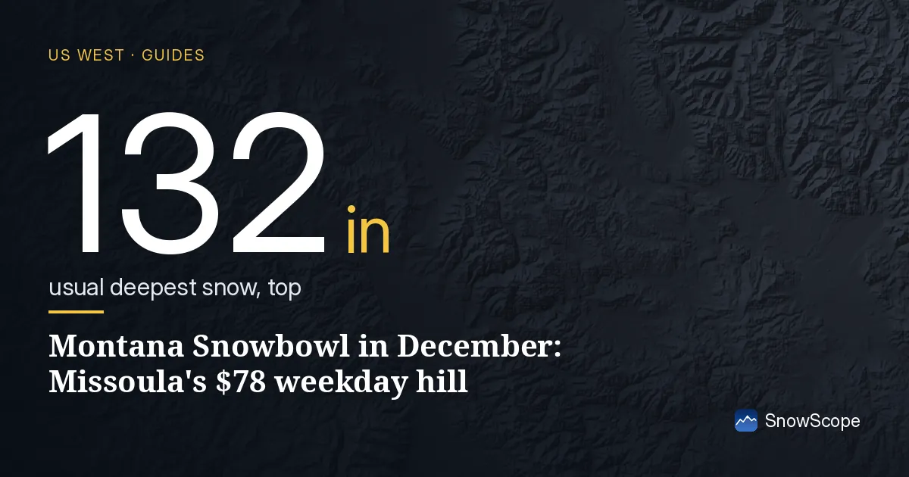

Montana Snowbowl in December: Missoula's $78 weekday hill
Montana Snowbowl sits close to Missoula with honest pricing: $78 for a weekday all-day ticket in 2026/27. The steep terrain and short runs draw locals. Snow arrives unevenly across the hill—the top builds reliable cover by mid-December, but the base stays thin through early winter.
See the live snow forecast for Montana Snowbowl in the SnowScope appSnow depth, powder alerts and the 3D map, free.
The hill and the ticket
Snowbowl spans from 4,990 ft (1,522 m) at the base to 7,530 ft (2,296 m) at the top, with 6 lifts and roughly 27 mi (43 km) of runs. It is a drive-and-ski resort: no village, no frills, just steep skiing near town.
Full-day tickets cost $78 on weekdays and $85 on weekends and holidays. An afternoon ticket from 12:30 is $72 on weekdays and $77 on weekends. The Indy Pass covers the resort: a Base Pass ($419) or Indy+ Pass ($469) includes two days per member area.

Where snow is thickest in December
By mid-December, the top of Snowbowl holds a typical 37 in (93 cm), with 91 % of winters above 20 in (50 cm). Mid-mountain (6,260 ft / 1,909 m) averages 30 in (76 cm), with 83 % of winters passing the good-snow mark. The base lags far behind: only 16 in (40 cm) is typical, and only 28 % of past winters reached 20 in.
The difference widens through the month. On Christmas Day, the top typically holds 44 in (113 cm) and mid-mountain 37 in (95 cm), while the base stands at 19 in (49 cm). By year's end, the gap is even starker: the top has 49 in (125 cm), mid-mountain 39 in (100 cm), and the base just 21 in (53 cm).

Reliability by week
Early December is risky at Snowbowl. In the week of 30 November to 6 December, only 20 % of past winters saw good snow at the base, compared with 67 % at mid-mountain and 78 % at the top. Even mid-mountain sits below 70 % odds.
The odds improve steadily. By the second week of December (7–13 December), mid-mountain reaches 83 % and the top 89 %. In the third week (14–20 December), mid-mountain stays at 83 % and the top 93 %. Christmas week is the most reliable: 91 % of winters brought good snow to mid-mountain and 96 % to the top.
How this winter is shaping up
On 13 November, SnowScope showed 6 in (16 cm) at the top, 1 in (2 cm) at mid-mountain, and bare ground at the base. The seven days ahead are forecast to bring 3 in (8 cm) more at both mid and top elevations, and 2 in (6 cm) at the base.
Early-season snow here is thin and scattered. Rocks or bare spots are common at all elevations in November. Last winter had 30 in (76 cm) at mid-mountain on 15 December, which was a solid start. The first half of past winters averaged 35 in (88 cm) on that date, and the second half 28 in (71 cm).
Snowbowl versus Bridger Bowl and Lookout Pass
Bridger Bowl near Bozeman charges $86 online ($99 at the window) and had typical mid-mountain snow of only 20 in (51 cm) by mid-December across past winters, with half of them above 20 in. Lookout Pass west on I-90 costs $63 midweek with a reservation and had 30 in (75 cm), more than Snowbowl's 30 in but higher prices later in the season.
For December, Snowbowl offers the best value among the three. Its terrain is steeper than Lookout's, and its December snow odds at mid-mountain are higher than Bridger's. If you are planning a weekday trip in early December and can ski above 6,000 ft, Snowbowl is the logical choice.
What to expect in a lean December
The first 15 winters on record (1980–81 to 1994–95) saw 35 in (88 cm) at mid-mountain on a typical 15 December, and every single winter passed 20 in. The most recent 15 winters (2011–12 to 2025–26) dropped to 28 in (71 cm) with 80 % above the threshold. Snow patterns have shifted slightly toward leaner early seasons.
If December turns dry, ride the upper groomed runs and check the snow map before each day for the next system. The access road near the top is steep and narrow: carry chains or use winter tires. Before venturing off-piste, consult the Gallatin National Forest Avalanche Center.
Tips for skiers
- Book a weekday: $78 all-day beats the $85 weekend rate and the afternoon ticket is only $72.
- Avoid the base in early December; aim for mid-mountain and above where snow arrives earlier and lasts longer.
- The road to the top is steep and narrow: winter tires or chains are essential, especially after fresh snow.
- Early-season snow is often patchy and thin; expect rocks or bare ground at the base through November.
- Before skiing off-piste, check the latest avalanche forecast from the Gallatin National Forest Avalanche Center.
About these numbers
Resort snow depths are the deepest snow on the resort's upper slopes on the date shown; they are estimates for an area, not a measurement at one point. Forecasts can change. Always read the official avalanche bulletin before going off-piste.
Official avalanche bulletins: Gallatin National Forest Avalanche Center
Cite this report
For research, teaching or the press: the numbers and charts are free to reuse under CC BY 4.0 with this citation.
SnowScope (2026), Montana Snowbowl in December: Missoula's $78 weekday hill, https://snowscope.app/blog/en/2026/11/montana-snowbowl-missoula-december-cheap-skiing.html, accessed 2026-11-14
SnowScope (Atlas Labs). (2026, November 14). Montana Snowbowl in December: Missoula's $78 weekday hill. SnowScope snow reports. https://snowscope.app/blog/en/2026/11/montana-snowbowl-missoula-december-cheap-skiing.html
BibTeX
@misc{snowscope2026montanasnowbowlmissoulad,
author = {{SnowScope (Atlas Labs)}},
title = {Montana Snowbowl in December: Missoula's $78 weekday hill},
year = {2026},
month = nov,
howpublished = {\url{https://snowscope.app/blog/en/2026/11/montana-snowbowl-missoula-december-cheap-skiing.html}},
note = {Published 2026-11-15 09:34 UTC; accessed 2026-11-14}
}· CC BY 4.0 · Methods, data and tools →
Montana Snowbowl: snow and temperature by height, this winter vs last (tools) →
Follow Montana Snowbowl
Free: a message when fresh snow is coming, and the forecast every morning.
More snow reports

Heavenly, Sierra-at-Tahoe and Mt. Rose have more snow on 19 November than in any winter since 1980-81. How much fell, the measured gauges, the weather behind it and the best days to go.

Snowbird lies at the head of Little Cottonwood Canyon. We explain the traction law, road status, the ski bus, and why the drive matters for snow depth.

Seven independent ski areas in the West where an adult day ticket costs from $49 to $98.8 on weekdays, compared with the snow they usually have in December.